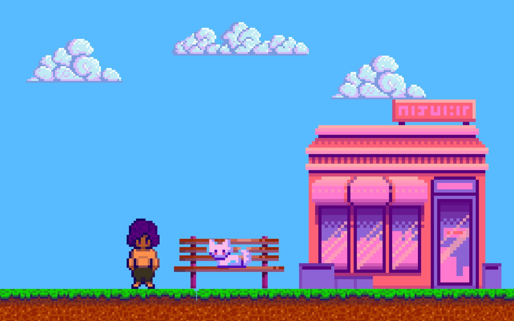

Sobre Mim
Esta pequena rena ganhou a habilidade de mudar sua forma e de pensar como humanos após comer a fruta Hito Hito no Mi. Chopper é um valioso membro da tripulação dos Piratas do Chapéu de Palha, atuando como médico da tripulação.

Experiência
Primeiro pirata (segundo membro se contarmos com Luffy) a se juntar à tripulação de Piratas do Chapéu de Palha, Zoro aceitou o convite de Luffy após o capitão salvar sua vida.
Sanji
Também conhecido como "Perna Negra" Sanji, este pirata foi o quinto a integrar a tripulação de Luffy. Suas ações como pirata lhe renderam a terceira maior recompensa entre os membros do Chapéu de Palha, além de atuar como cozinheiro oficial do grupo.